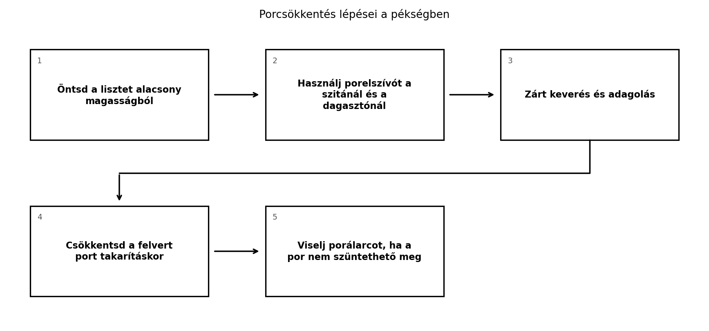
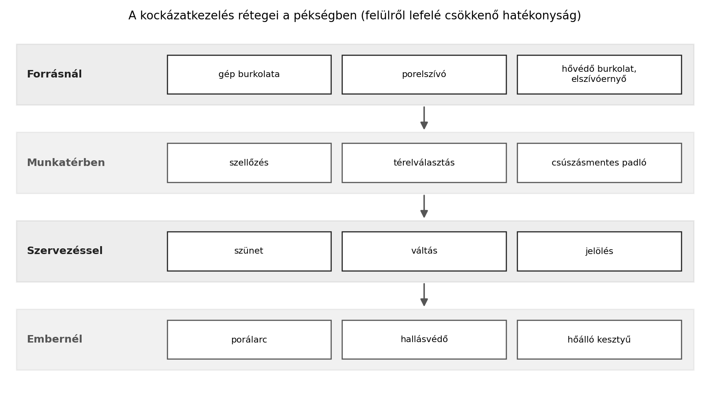

Reggeli csúcs a sütőüzemben: az ezerkettes kenyeret egyszerre sütik, a kelesztőkamra gőze csapódik le a falon, az osztógép monoton csattog, és közben egy zsák lisztet öntenek be a dagasztó fölé. Ha a munkakörnyezeti veszélyeket senki nem szabályozza, akkor ez a hétköznapi helyzet belégzési panaszt, égést, halláskárosodást vagy gerincpanaszokat okozhat. Ebben az alfejezetben a pékség fizikai, kémiai és biológiai környezeti ártalmait és az ellenük való védekezést tanulod meg, a műszaki és a szervezési intézkedésektől az egyéni védőeszközökig.
A munkahelyi kockázatokat úgy képzeld el, mint egy réteges tortát: a közepén a folyamat (dagasztás, sütés), körülötte pedig a veszélyforrások rétegei. A lisztpor a belégzési réteg, a kemence hője a hőterhelési réteg, a gépek zaja és rezgése a zaj- és rezgésréteg, az éjszakai munka az időterhelési réteg, a vegyi anyagok pedig a kémiai réteg. A védekezés ugyanúgy rétegzett: először a forrásnál, utána a munkakörnyezetben, legvégül az embernél.
| Tényező | Rövid távú hatás | Hosszú távú hatás | Fő védekezés |
|---|---|---|---|
| Lisztpor | köhögés, orrfolyás, szemirritáció | foglalkozási allergia, pékasztma | forrásnál: alacsony öntés, elszívás, zárt adagolás; egyénnél: porálarc |
| Hőterhelés | égés, kimerülés, kiszáradás | keringési terhelés | forrásnál: hővédő burkolat, elszívóernyő; munkatérben: szellőzés; egyénnél: hőálló kesztyű, kötény |
| Zaj, rezgés | fáradtság, figyelemzavar | halláskárosodás | forrásnál: zajcsökkentő burkolat; szervezéssel: idő korlátozása; egyénnél: hallásvédő |
| Éjszakai munka | fáradtság, balesetveszély | alvás- és egészségzavar | szervezéssel: szünetek, műszakbeosztás |
| Vegyszerek (tisztítószer, perecoldat) | bőr- és szemmarás | bőrbetegség | forrásnál: adagoló, kevésbé veszélyes szer; egyénnél: védőszemüveg, vegyszerálló kesztyű |
A táblázat nem rangsort mutat, hanem azt, hogy az egyes tényezők milyen hatással járnak, és hol lehet ellenük védekezni. Az összes tényezőt külön-külön is megismered.
Definíció. Munkakörnyezeti hatás: minden olyan fizikai, kémiai, biológiai vagy pszichés tényező, amely a munkahelyen hat a dolgozóra, és rövid vagy hosszú távon befolyásolhatja az egészségét. A pékségben a leggyakoribbak: lisztpor, hő, zaj, rezgés, éjszakai műszak, álló/ismétlődő munka és vegyi anyagok.
Definíció. Kollektív védőeszköz (műszaki védelem): olyan védelmi megoldás, amely a veszélyforrást a keletkezésénél vagy a munkatérben csökkenti, és több embert is véd. Ilyen például a porelszívó, a szellőzés, a zajcsökkentő burkolat, a hővédő fal, a csúszásmentes padló és a védőburkolat a gépen.
Definíció. Egyéni védőeszköz (EVP): olyan eszköz, amelyet a dolgozó visel vagy tart magán, hogy védje magát egy vagy több veszélyforrás ellen. A pékségben jellemző például a porálarc, a hallásvédő, a hőálló kesztyű, a védőszemüveg, a biztonsági lábbeli és a hőálló kötény. (A higiéniai munkaruha az élelmiszert védi, nem egyéni védőeszköz.)
Szabály. A védekezési sorrend: először a kockázatot a forrásnál szüntesd meg vagy csökkentsd. Ha ez nem elég, alkalmazz kollektív műszaki védelmet. Ha ez sem véd elegendően, akkor egyéni védőeszközt kell használni. Az egyéni védőeszköz az utolsó védőréteg, nem a helyettesítője a műszaki védelemnek. ∎
A liszt finoman aprított, könnyen a levegőbe kerülő szemcsékből áll. A péknél a legfontosabb belégzési veszélyforrás a lisztpor, de hasonló lehet a fűszerpor, a tojáspor, a gabonapor vagy a sütőanyag-por; a porcukor főként irritál. A por belégzése rövid távon köhögést, orrfolyást, szemirritációt okozhat. Hosszabb távon, különösen érzékeny embereknél, foglalkozási allergiát vagy pékasztmát alakíthat ki.
Definíció. Pékasztma: a liszt- és gabonapor, illetve a sütőanyagokban és lisztjavítókban levő enzimek (pl. α-amiláz) pora belégzése által kialakult foglalkozási asztmás megbetegedés. Tünetei lehetnek köhögés, sípoló légzés, nehézlégzés, orrfolyás vagy szemviszketés. (ellenőrizendő: a foglalkozási megbetegedések bejelentésére vonatkozó hatályos magyar szabályok)
Figyelem. A porral dolgozás nem csupán kényelmetlenség. A lisztpor levegőben tartósan a leülepedett rétegben is visszaszállhat, és a takarításkor felvert por újra belélegezhető. A lisztpor ráadásul éghető por: zárt térben, megfelelő koncentrációban, gyújtóforrás jelenlétében porrobbanás is kialakulhat. (ellenőrizendő: a lisztpor robbanási jellemzői és a silótéri övezetekre vonatkozó zónabesorolási előírások)
Porcsökkentés:

Szabály. A lisztet ne dobd, ne ejtsd nagy magasságból, mert a lehulló liszt porfelhőt kelt. A szitálást és a zsákürítést lehetőleg porelszívóval ellátott vagy legalább jól szellőztetett munkahelyen végezd. A lisztes padlót ne seprűvel kavard fel; azt használd, amit az üzemi takarítási utasítás előír.
Higiénia. A porelszívó szűrőjét, a leülepedő port és a szellőzés nyílásait a takarítási terv szerint kell kezelni. A lisztpor élelmiszerrel is érintkezik, ezért a porral szennyezett felületet az élelmiszer-biztonsági tisztítási sorrend szerint kell tisztítani; a munkavédelmi porelszívás és a higiéniai takarítás nem választható el élesen.
A lisztpor expozíciós határértéke az, amennyi por a munkahelyi levegőben huzamosan jelen lehet. A porfajtára és a beltartalomra vonatkozó határértéket a mindenkori magyar munkahelyi határérték-rendelet tartalmazza. (ellenőrizendő: a hatályos munkahelyi levegős határértékeket tartalmazó jogszabály és a lisztporra vonatkozó konkrét határérték)
A kemence, a fánksütő, a gőzölő, a forró sütőlemez és a forró zsiradék mind hőforrás. A dolgozót többféle hőhatás érheti:
Szabály. Forró eszközt, lemezt, szerszámot csak az adott munkához jóváhagyott, hőálló kesztyűvel fogj meg. A forró gőzt soha ne fúvasd magad felé. A kemenceajtó nyitásakor állj oldalra, és tartsd a kesztyűt az ajtó előtt, hogy a kiáramló hő ne az arcodat érje. A forró olajjal vagy zsiradékkal végzett munka külön égési és tűzkockázat. (ellenőrizendő: a hőálló kesztyűkre és a forró felületek jelölésére vonatkozó üzemi kockázatértékelés)
A kemenceajtó nyitásának helyes és hibás módját a következő felülnézeti rajz veti össze egy oldalra nyíló, zsanéros ajtón. Helyesen (1) a kezelő oldalt, az ajtólap mögött áll, (2) hőálló kesztyűt visel, az alkarja fedett, (3) az ajtót lassan, először csak résnyire nyitja, így (4) a gőz és a forró levegő tőle elfelé távozik. Hibásan (5) szemben, az ajtó előtt áll, (6) az arca a gőzáramba kerül, (7) az alkarja csupasz, és (8) az ajtót hirtelen, teljesen kitárja.
Felfelé vagy lefelé nyíló ajtónál (például csőkemencénél) is ugyanez a szabály: oldalt állás, résnyi nyitás, a gőz kivárása, kesztyű és fedett alkar. A HTML-kiadásban a helyes és a hibás változat gombbal váltható, a számokra mutatva megjelenik a magyarázat.
Mechanikai zaj és rezgés: a dagasztógépek, osztók, szeletelők és a szellőzőberendezések zajt keltenek. A tartósan hangos zaj károsítja a belső fület, fáradtságot és figyelemzavart okoz. A rezgés, például a kézi gépektől, a hosszan tartó használat során a kéz és a kar vérkeringését, ízületeit és idegeit terhelheti.
Szabály. A zajos gép mellett viselj hallásvédőt, ha az üzemi zajmérés vagy a gépkönyv előírja. A hallásvédő ne akadályozza a hajháló helyes viselését (a fültok a hajháló fölé kerüljön). A rezgő gépet ne szorítsd felesleges erővel, tarts szünetet, és jelezd, ha a gép erővel ráz. (ellenőrizendő: a zajexpozíció határértéke és a hallásvédő kiválasztásának üzemi szabálya)
Hő- és zajmérséklés: a kemence elé hővédő lemez, a gép köré zajcsökkentő burkolat, a munkatérbe megfelelő szellőzés és páraelszívás tartozik. Az ilyen kollektív védelem mindig előbbre való, mint a hosszú ideig viselt kesztyű vagy a hangos zaj melletti hallásvédő.

A pék gyakran hajnalban vagy éjszaka dolgozik, mert a friss árunak reggel a polcon kell lennie. Az ember belső órája ilyenkor alvást vár, ezért gyakran fáradtság, koncentrációs csökkenés, alvászavar és emésztési gondok jelentkeznek. Az éjszakai műszak önmagában nem tiltott, de a munkáltatónak figyelembe kell vennie a dolgozó egészségi állapotát és a munkaidő-beosztás szabályait. (ellenőrizendő: a munkavédelmi törvény éjszakai munkára vonatkozó rendelkezése és a munkáltatói ellenőrzés szabálya)
Definíció. Éjszakai munkavégzés: a munka törvénykönyve szerint éjszakai munka a 22 óra és 6 óra közötti időszakban végzett munka. A munkáltató köteles az éjszakai munkát végző munkavállaló egészségi állapotát ellenőrizni, mielőtt ilyen munkakörbe osztja be, és időszakosan is vizsgálni. (ellenőrizendő: a hatályos munkajogi és munkavédelmi előírások pontos szövege)
Szabály. Éjszaka előtt aludj nappal, kerüld a nehéz, zsíros étkezést a műszak elején, és tarts rendszeres étkezési időt. A munkahelyen tarts szüneteket, a gép mellett pedig csak kipihenten dolgozz. Ha fáradtság miatt nem tudsz biztonságosan dolgozni, jelezd a műszakvezetőnek.
Ergonómia: a pék sokat áll, hajol, emel, cipel, ismétlődő mozdulatokat végez. A zsákok, tepsik, rekeszek emelése helytelen testhelyzetben gerinc- és vállpanaszokat okoz. Az osztó- és formázó munka ismétlődő terhelése a csuklót, könyököt és hátat terheli.
Szabály. Emeléskor hajlítsd be a térded, tartsd a terhet a testedhez közel, egyenes háttal, lábból emelj, és ne csavard el a derekad. A munkalap magasságát állítsd a testmagasságodhoz, ha lehet. A 25 kg feletti zsákot egyedül ne emelj, csak emelőeszközzel vagy segítővel, az üzemi emelési utasítás szerint. (ellenőrizendő: a kézi tehermozgatásra vonatkozó munkahelyi előírások és határértékek)
A pékségben használt vegyszerek közé tartoznak a tisztító- és fertőtlenítőszerek, a kemence- és lemeztisztítók, a lúgos perecoldat és a kémiai lazítószerek (például a szalalkáli). A vegyszer belégzése, bőrre jutása vagy szembe kerülése maró, irritáló vagy mérgező hatású lehet. A vegyszereket a gyártó biztonsági adatlapja szerint kell kezelni.
Higiénia. A vegyszert soha ne tartsd élelmiszeres edényben, és ne öntsd élelmiszeres tárolóba. A munkahelyen a vegyszeres és az élelmiszerrel érintkező eszközöket külön kell tárolni és címkézni. A fel nem használt hígítást a takarítási és vegyi kezelési utasítás szerint kell megsemmisíteni.
Biológiai veszélyek: a nyers liszt, tojás, tej és a nyers tészta mikroorganizmusokat hordozhat, amelyek a bőrre, nyálkahártyára kerülve vagy a kézről az élelmiszerre átkerülve kockázatot jelentenek. Az élelmiszerrel dolgozó péknek ezért a személyi higiénia mellett védőkesztyűt kell viselnie, ha sérült a bőre, vagy ha a munkakör ezt megköveteli. A védőkesztyű azonban nem ok a kézmosás elhagyására.
Definíció. Munkaruha: a munka közben a dolgozó ruházatát óvó ruha, amely egyúttal az élelmiszer-higiénia része. Védőruha: a dolgozó testét közvetlenül egy veszélyforrás ellen védő ruházat, például hőálló kötény vagy vágásálló kesztyű. A kettő gyakran együtt jár, de a munkaruha önmagában még nem védelem égés ellen.
Szabály. Az élelmiszeripari munkaruha legyen tiszta, világos színű, zárt, magasra gombolt, és ne legyen rajta gyűrű, óralánc, hajkefe vagy más leeső tárgy. A pék a gyűrűt, karkötőt, hosszú műkörmöt és a kilógó ékszert ne viselje a termelőtérben. A haját hajhálóval vagy sapkával takarja. A lábbeli csúszásmentes, zárt, könnyen tisztítható legyen. (ellenőrizendő: a pékség üzemi higiéniai szabályzata és a munkáltató védőruha-juttatási rendje)
A munkáltató az adott munkakör kockázataihoz igazodóan ad védőeszközt. A védőeszközt a dolgozó nem választhatja le önkényesen: a védőszemüveget akkor is viselni kell, ha kényelmetlen, amikor a feladat megköveteli.
| Veszély | Egyéni védőeszköz |
|---|---|
| Lisztpor (zsákürítés, lisztfeladás) | porálarc |
| Zaj (zajos gép mellett, ha a mérés előírja) | hallásvédő |
| Forró felület (kemence, forró lemez) | hőálló kesztyű, hőálló kötény |
| Perecoldat, vegyszeres takarítás | védőszemüveg + lúg-/vegyszerálló kesztyű |
| Csúszás, leeső tárgy | csúszásmentes, zárt munkacipő |
| Higiéniai ruházat: hajháló, sapka, munkaruha | nem egyéni védőeszköz – az élelmiszer védelmét szolgálja |
A különböző veszélyek elleni eszközök nem állíthatók egy „védelmi szint” sorrendbe: mindegyik a saját veszélye ellen véd, és azt a kockázatértékelés és a gyártói adatlap határozza meg.
A lenti rajz egy alakon mutatja az összes eszközt, a jobb oldali négy keret pedig azt, hogy melyik munkahelyen melyikre van szükség: (1) hajháló vagy sapka és (2) világos, zárt munkaruha mindig – ezek higiéniai ruházatok –, (3) porálarc a lisztfeladásnál, (4) védőszemüveg a vegyszeres takarításnál, (5) hallásvédő a zajos gép mellett, ha a zajmérés előírja, (6) hőálló kesztyű és (7) hőálló kötény a kemencénél, (8) csúszásmentes, zárt munkacipő mindig.
A valóságban senki sem viseli egyszerre mind a nyolc eszközt: a munka és a kockázatértékelés dönti el, mi kell. Figyelj a dagasztógép melletti keretre: forgó gép mellett kesztyűt viselni tilos, mert a kesztyűt – és vele a kezet – a gép behúzhatja. A HTML-kiadásban a munkahelygombokkal kiemelhetők az adott munkához tartozó eszközök.
Előírás (munkavédelem és védőeszközök). A munkavédelemről szóló törvény és a vonatkozó rendeletek szerint a munkáltatónak gondoskodnia kell a biztonságos munkavégzéshez szükséges egyéni védőeszközökről, azok karbantartásáról, tisztításáról és pótlásáról. Az egyéni védőeszközöknek megfelelő jelöléssel (CE) és magyar nyelvű használati útmutatóval kell rendelkezniük. A dolgozónak az utasítás szerint kell használnia őket. A védőeszközök fajtáját és a juttatás rendjét a munkáltató kockázatértékelése és a belső szabályzata határozza meg. (ellenőrizendő: a munkavédelemről szóló törvény és a védőeszközökre vonatkozó rendelet hatályos előírásai)
Előírás (munkahelyi levegő és lisztpor). A munkahelyi levegőben lévő por és más anyagok megengedett határértékeiről külön jogszabály rendelkezik. A péknek nem kell fejből tudnia a határértéket, de tudnia kell, hogy a munkáltató méri és értékeli a porterhelést, és ennek alapján ír elő műszaki védelmet vagy egyéni védőeszközt. (ellenőrizendő: a munkahelyi levegős határértékeket tartalmazó hatályos rendelet)
Cél: a pékségi munkakörnyezeti kockázatok elleni védelem rögzítése napi rutinná.
Eszközök és anyagok: tiszta munkaruha, hajháló vagy sapka, csúszásmentes munkacipő, porálarc, hallásvédő, hőálló kesztyű, védőszemüveg, a gépkönyv védőeszköz-ajánlása.
Higiénia. Kézmosás a termelőtérbe lépés előtt. A munkaruhát tisztán vedd fel, a szennyezett ruhát tedd a gyűjtőbe. Az ékszert, hosszú hajat, rágógumit hagyd a termelőtéren kívül. A sebet vízálló, ragasztható kötszerrel fedd be. A védőeszköz nem pótolja a tisztaságot.
Gépbiztonság. Ha a gép zajszintjét vagy porexpozícióját a gépkönyv adja meg, akkor a megfelelő védőeszközt a gépkönyv szerint kell viselni. A védőeszköz ne akadjon be forgó gépbe: a fülvédő, a kesztyű és a laza ruhaujj ne érjen a dagasztókarhoz vagy a szalaghoz. A védőburkolatot nem szabad levenni, és a védőeszköz viselése nem ad engedélyt a védőberendezés kiiktatására.
Szemle és kiválasztás. Nézd meg a mai műszakfeladatot: lesz-e lisztszitálás, gép mosása, kemence melletti munka, fánksütő mellett olajjal. A kockázatértékelés alapján válaszd ki a szükséges védőeszközöket.
A védőeszköz ellenőrzése. A porálarc tömítsen, a hallásvédő ne legyen repedt, a kesztyű ne legyen szakadt. A hibás eszközt ne használd, és kérd a cseréjét. A védőeszköz méretének illeszkednie kell.
A munkaruha felvétele. A hajháló fedjen be minden hajat. A ruhaujj zárt, a nadrág a cipő fölött, a cipőfűző bekötve. A kötény ne legyen laza, ne lógjon a gépbe.
Kollektív védelem bekapcsolása. Kapcsold be a szellőzést, a porelszívót, a hőelszívást. A gép védőburkolata legyen a helyén, a kapcsolózárat ne iktasd ki.
Munka közben. A zsákot alacsonyan ürítsd, a lisztet ne szórd fel, a forró lemezt kesztyűvel fogd. A zajos géptérben viseld a hallásvédőt, a hő mellett a védőkesztyűt.
Műszak végén. A védőeszközt tisztítsd, ellenőrizd, és a kijelölt helyre tedd. A sérült eszközt jelenteni kell. A munkaruhát cseréld le, ha szennyezett.
Dokumentálás. A védőeszközök kiadását, a karbantartást és a használat ellenőrzését a munkáltató dokumentálja. A dolgozó a hibát és a hiányzó védőeszközt jelezze a műszakvezetőnek, és azt a baleseti naplóhoz hasonlóan rögzítsék. (ellenőrizendő: az üzemi védőeszköz-nyilvántartás és a munkavédelmi ellenőrzés rendje)
Egy pékségben a fiatal pék minden reggel köhögött, a szeme viszketett, és a műszak végére torokfájása lett. A panasza alapján a munkáltató elvégeztette a levegőport mérését, és kiderült, hogy a lisztszitáló mellett a porelszívó szűrője eltömődött, a zsákürítés pedig magasról történt. A pék nem hordott porálarcot, mert azt hitte, csak az idősebb dolgozóknak kell.
A javítás során a szitáló mellé új porelszívó szűrőt helyeztek, a lisztbetöltést alacsonyabbra állították, és a dolgozó kapott megfelelő porálarcot. A köhögése néhány hét múlva megszűnt. A tanulság: a műszaki védelem és az egyéni védőeszköz együtt véd, és a panaszt mindig jelenteni kell, nem hozzászokni.
A porálarc nem illeszkedik, mégis viseli a dolgozó. A porálarc mellett a levegő a szivárgáson át kerül be, ezért a védelem nem valósul. Megoldás: illeszkedés-próbát kell végezni, a szakáll vagy a kilógó haj ne törje meg a tömítést, és a gyártó utasítása szerint kell illeszteni.
A forró sütőlemezt a vékony higiéniai gumikesztyűvel fogja meg. A higiéniai kesztyű nem hőálló, és a hő átég, a bőrhöz forr. Megoldás: a forró lemezt mindig hőálló, száraz kesztyűvel fogd meg; a nedves kesztyű a hőt jobban átvezeti.
A hallásvédőt a pék a nyakában tartja, mert „a másik gépet épp hallani kell”. A nyakban lévő fülvédő nem véd a zajzónában; a géptérben a hallásvédőt viselni kell. Megoldás: a zajos zónában viselj hallásvédőt, a csendesebb helyen védő nélkül figyelj. A kommunikációhoz használj jelbeszédet, vagy rövid, hangos figyelmeztetést.
A válaszok a Megoldások elején, „Önellenőrzés – válaszok” alcím alatt vannak.
1. feladat (A) Sorold fel a pékségben jellemző fizikai, kémiai és biológiai munkakörnyezeti veszélyeket egy oszlopba rendezve, és írd mellé, melyik munkafázisban jelentkezhet.
2. feladat (A) Két pékségi munkafázist írsz le: (a) zsák lisztet borítasz a dagasztóba, (b) forró sütőlemezt húzol ki a kemencéből. Mindkettőhöz mondj egy kollektív védőeszközt és egy egyéni védőeszközt.
3. feladat (B) Rajzolj folyamatábrát vagy írd le számozott lépésekben, mi a teendő műszakkezdés előtt a védőeszközök kiválasztásától a gép indításáig, ha aznap lisztszitálás és kemence melletti munka is szerepel.
4. feladat (B) Számítsd ki, hány védőeszközt kell kiadni egy műszakban, ha 8 dolgozó van, és a munka: 6 fő a termelőtérben, 2 fő a mosogatóban. A termelőtérben mindenkinek porálarc, hajháló és hőálló kesztyű szükséges, a mosogatóban mindenkinek hajháló és védőszemüveg. A pótlási tartalék 10%. Hány darabot ad ki az üzem a műszakra?
5. feladat (C) A pék panaszkodik, hogy a füle zúg a műszak után, és a porálarcot nem hordja, mert „a szitagépnél nincs por”. Milyen lépésekkel vizsgáld meg a helyzetet, és milyen intézkedést javasolsz a kockázat csökkentésére?
6. feladat (D) Egy pékségben a pék hajnali 2 órakor kezd, 10 órakor fejez be, és közben a dagasztógép mellett áll. Milyen ergonómiai, éjszakai munkavégzési és zaj-elleni szabályokat tart be, és melyik védőeszközt válassza, ha a zajszint a gépkönyv szerint a hallásvédőt kötelezővé teszi? Írj 4–5 mondatos munkautasítást.
| Kategória | Veszély | Jellemző munkafázis |
|---|---|---|
| Fizikai | Lisztpor | lisztszitálás, zsákürítés, dagasztó töltése |
| Fizikai | Hő, forró felület | kemence melletti vetés, sütőlemez-kihúzás, fánksütő mellett |
| Fizikai | Zaj, rezgés | dagasztógép, osztógép, szeletelő gép üzemeltetése |
| Fizikai | Ismétlődő mozdulat, statikus állás | osztás, formázás, csomagolás |
| Kémiai | Tisztító-, fertőtlenítőszer, lúgos perecoldat | takarítás, pereckészítés |
| Biológiai | Nyers liszt, tojás, tej mikroflórája | nyersanyag-előkészítés, tészta feldolgozása |
A lépések: (1) műszakfeladat áttekintése: lisztszitálás, dagasztás, kemence melletti munka lesz; (2) a kockázatértékelésből a szükséges EVP kiválasztása; (3) a porálarc, a hallásvédő, a hőálló kesztyű és a hajháló ellenőrzése; (4) a munka- és védőruha felvétele; (5) a szellőzés, a porelszívó és a gép védőburkolatainak működésellenőrzése; (6) a gép indítása az üzem előtti gépszemle után, felügyelettel.
Adott: 6 termelő, 2 mosogató; tartalék 10%.
A fülzúgás a zajterhelés jele; a porálarc elhagyása a lisztpor-belégzés kockázatát növeli. A vizsgálat lépései: (1) meg kell nézni, van-e zajmérés a szitagép mellett, és van-e zajcsökkentő burkolat; (2) ellenőrizni kell a porelszívó működését és a szita körüli port; (3) a dolgozóval meg kell beszélni, mikor és hogyan jelentkezik a fülzúgás; (4) fel kell tárni, miért nem használja a porálarcot. Javaslat: a szitagép mellé porelszívó és zajcsökkentő burkolat, vagy a gép áthelyezése; egyéni védőként porálarc és hallásvédő, a viselés ellenőrzésével. A mérési eredményt és a védőeszköz-kiosztást dokumentálni kell.
Munkautasítás a hajnali 2–10 órás műszakra: előző nap biztosíts megfelelő alvást; a műszak alatt tarts szünetet, pótold rendszeresen a folyadékot (víz). A dagasztógép mellett viselj hallásvédőt a zajzónában, mert a gépkönyv ezt kötelezővé teszi. Emeléskor a zsákot lábból, egyenes háttal, közel a testedhez emeld; a 25 kg feletti zsákhoz segítőt kérj. A munkaállásodat és a dagasztógép magasságát úgy állítsd be, hogy ne kelljen kényszertartásban hajolni.
A pékségi munkakörnyezet veszélyei a lisztpor, a hő, a zaj, a rezgés, az éjszakai munka, a stressz, az ergonómiai terhelés és a vegyszerek. A védekezés sorrendje: a veszélyforrást a forrásnál szüntesd meg, ezután alkalmazz kollektív műszaki védelmet, és legvégül egyéni védőeszközt. A lisztpor belélegzése pékasztmát okozhat, ezért a szitálásnál és a zsákürítésnél porelszívó és porálarc szükséges. A kemence mellett hőálló kesztyűt, a zajos gépnél hallásvédőt kell viselni. Az éjszakai munka miatt a pihenés és a rendszeres szünet elengedhetetlen. A munka- és védőruha tiszta, zárt, csúszásmentes és az élelmiszer-higiéniának is megfelel. A dolgozó a hibás védőeszközt jelenteni köteles, és a védőeszköz viselése nem pótolja a jó gépi védelmet. Továbbvitt eredmény. A munkakörnyezeti hatásokat és a védelmi rétegeket a Munkabaleset, elsősegély és tűzvédelem alfejezetben használjuk tovább, ahol a baleseti okokat és az elsősegély lépéseit tanulod.